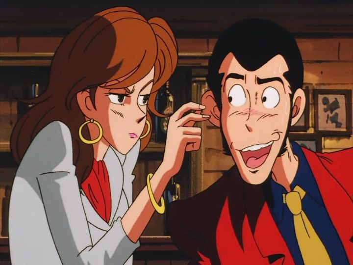

Disclaimer: This is a review of the 1990 television special "Lupin the Third - The Hemingway Papers," also known with titles such as "The Mystery of the Hemingway Papers."I purchased the Discotek DVD releases of the first two "Lupin the Third" television specials, "Bye Bye, Lady Liberty" and "The Hemingway Papers," around the same time. After watching them together, despite sharing the same director and script writer, I was taken aback by how different the two are. While "Lady Liberty" feels like a spirtual successor to the "Part III" series, "Hemingway Papers" feels like a callback to "Part I" and "Part II." This could be seen as an extra long single episode from the TV series, with a much better balance of tone compared to the prior special. Less fantasy magic and cartoonish antics, and more of Lupin's sly scheming and a complex situation to steal a treasure from.The production values even match the sense of a TV episode, for better or for worse. The character designs are much more pleasing than "Liberty" or "Part III," recalling the style of "Part II." But the visual details and animation are only slightly above par compared to "Part II," much more in line with a limited TV production than a feature film. It's all servicable enough to tell the solid story. The music also relies heavily on the classic TV theme, which is as great as ever (if it ain't broke, why fix it?). I'm not a literary buff, but part of my interest in the movie was how Ernest Hemingway tied into the plot. For the most part, he isn't used much, which might disappoint fans of his work. The story is that the author was killed, and his final unpublished manuscript stolen, for revealing the location of a hidden treasure. Lupin knows the legend, but comes across new leads that might help him find it: the papers lead to the treasure, and the papers are in a locked box, and there's a key that opens that box, etc. It sounds like a globe-trotting adventure, but the movie takes place almost entirely in the nation of Colcada, currently undergoing a dangerous civil war between two factions.  Part of the fun this time is that Lupin's gang are involved, but not working together. Lupin's alone for the treasure, and Jigen, Goemon, Fujiko and Zenigata all have their own reasons for being on the island, sometimes putting them on opposing sides. Lupin's forced to take his time to outsmart everyone, biding his time carefully without putting the spotlight on him too soon. Since there's an active war making the situation delicate, everyone is at greater danger for being found out. This is a smarter Lupin, matching the more serious TV episodes rather than the cartoonish versions. And the subplots for the others, Jigen in particular, are just as interesting, if not more so. The paths cross and separate, and the viewer is left in suspense to see how each will culminate towards the conclusion. In the end, "The Hemingway Papers" has a strong plot at the core that feels like Lupin at his best, if you're a fan of the less-comedic version of him. It's subdued a bit, with less violence and sexy fanservice, relying solely on the intrigue of the adventure. Discotek's DVD is a bit barebones, one of the few specials without an English dub (the Japanese actors are plenty fine), and with less bonus features, aside from a nice English audio commentary. My sense is that "Lupin the Third - The Hemingway Papers" is an overlooked, easily forgotten special for the franchise, as if it was just another of many TV episodes. Shame that it was underrated. It's not as jam-packed with action and fun, but the solid plot makes it worth seeking out.
- "Ani" More reviews can be found at : https://2danicritic.github.io/ Previous review: review_Lupin_the_Third_-_The_Fuma_Conspiracy Next review: review_Lupin_the_Third_-_The_Mystery_of_Mamo